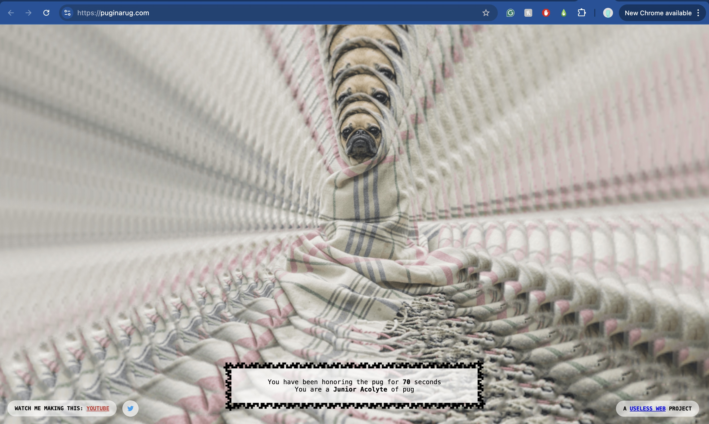

“When you’re staring into this beautiful pug in a rug the world fades away and nothing else matters… at least, that’s what it felt like building this beautiful time waster. A true homage to the beautiful world of pugs, as well as some of the most time-consuming sites in existence.”
'Pug in a rug’ is one of the many websites accessed via ‘the useless web’ found at https://theuselessweb.com. Created in 2012 by Tim Holman, the web artist describes his collection of webpages as "a hub for all things quirky and weird on the internet." Upon opening ‘Pug in a rug,’ you are met with just that, a central image of a pug wrapped in a rug that overlaps in an outward-moving motion, emphasising the dog in the centre of the web browser. Upon moving your cursor, you will observe the primary interactive element of this website, the pug subtly follows the position of your cursor within a central boundary. Below the pug is a text box that reads “You have been honouring the pug for (x) seconds,” followed by a description of your ranking in accordance with your elapsed pug honouring time. As the second timer increases, the description of your ranking changes. According to 'the useless web’ about the websites page, there are 19 different “levels of pug”, starting as a junior assistant, and quickly rising through the ranks, you can eventually achieve hermit, lord, or even king of pug.
When clicked, the "WATCH ME MAKE THIS: YouTube" link on the bottom left of the page directs you to a 35-minute video that documents Holman's process of creating the pug in rug website. Displayed as the classic Twitter bluebird icon, a link to Holman's Twitter account (now X) is on the right side of the YouTube link. Mirroring these social media links on the right side of the webpage is the "A USELESS WEBSITE PROJECT" link, which redirects you to the useless website home page.
The image of the pug does not belong to the website's creator, Tim Holman, but originated from Unsplash, a popular free domain image website owned by Getty Images. User Matthew Henry uploaded the original photograph amongst an array of other pug-in-rug photographs.